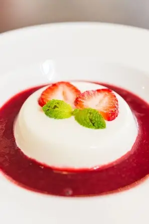

What is this recipe?
Vanilla panna cotta with mixed berries is a classic Italian dessert that's creamy, silky, and lightly sweet, topped with bright fruity berries.
INGREDIENTS TIME!

- 1/4 cup cold water
- 2 1/2 teaspoons unflavored gelatin (from 2 packages)
- 3 cups whipping cream
- 1 cup sugar
- 1 1/2 teaspoons vanilla extract
- 4 1/2-pint assorted fresh berries
- 1/3 cup sweet white wine
How to actually make it

- Pour 1/4 cup cold water into small custard cup. Sprinkle gelatin over. Let stand until gelatin softens, about 15 minutes. Bring 1 inch of water in small skillet to boil. Place cup with gelatin in water. Stir until gelatin dissolves, about 2 minutes. Remove from heat.
- Combine cream and 2/3 cup sugar in heavy medium saucepan. Stir over medium heat just until sugar dissolves. Remove from heat. Mix in vanilla and gelatin. Divide pudding mixture among 8 wineglasses. Cover and chill until set, at least 6 hours and up to 1 day.
- Combine berries and remaining 1/3 cup sugar in medium bowl. Crush berries slightly with the back of the spoon. Mix in wine. Let compote stand until berry juices and sugar form syrup, stirring often, at least 1 hour and up to 2 hours.